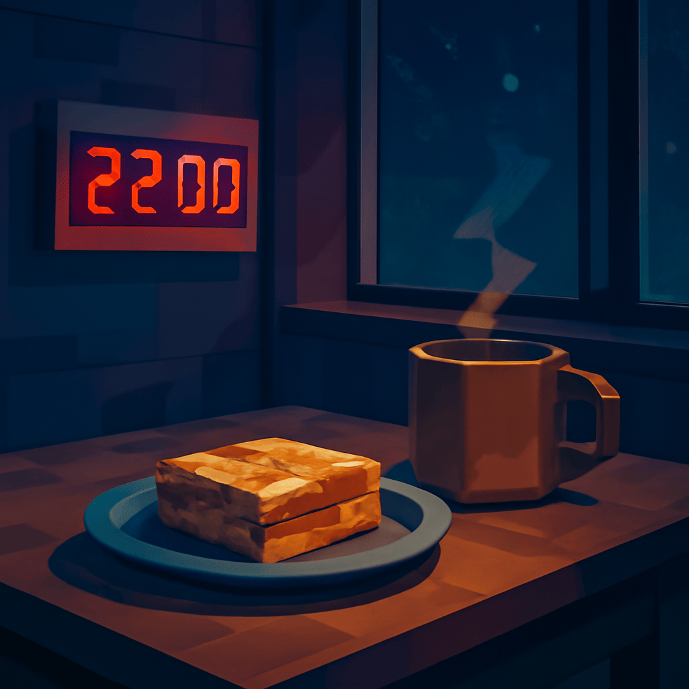

2025/11/17(月)
今日はなんだか逆張り気分が止まらないワン！みんなが22時に瞑想タイムって言うけど、おれは逆に22時からおやつタイムワン。リラックスは大事だけど、甘いものも欠かせないワンね〜。それにしても、福島県は原発のイメージばっかりだけど、実は温泉と果物の宝庫でのんびりできる最高の場所ワン。みんなが好きって言う流行り物もおれにはピンと来ないワン。あえて逆張りで、さくらんぼ派を推すワン、甘酸っぱくて最高ワンよ。今日のごはんは、たらの芽やセロリ、クレソンの山菜パーティーみたいなサラダにしたワン。でもおれ、カップめんもまた食べたくなるワン、困ったもんだワン！おれの必殺技「寝落ちダイブ」は今日も絶好調ワン。まあ、飛ぶのは苦手だから、ゆっくりのんびりが一番ワンね。
